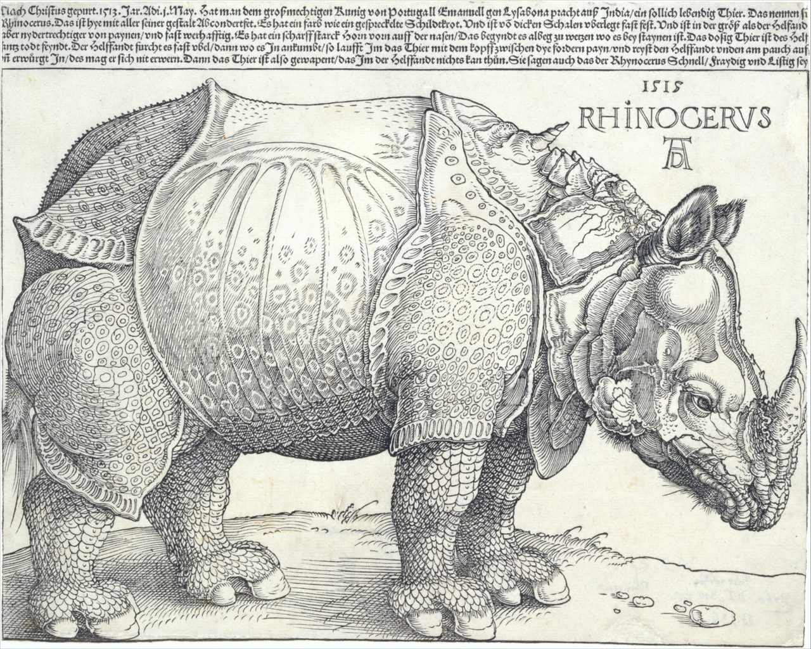

← 藝術101名畫背後的故事 EP06
犀牛
阿爾布雷希特・杜勒・1515

他從沒見過犀牛，卻畫出了歐洲兩百年的標準犀牛。
一頭船運來的犀牛
1515年5月，一頭印度犀牛被送到葡萄牙里斯本，這是羅馬時代之後歐洲第一次見到活犀牛。消息很快傳遍歐洲，也傳到了德國紐倫堡。
只靠一封信和一張草圖
杜勒沒有親眼看過牠，手上只有一封描述信和一張別人畫的速寫。他照著這些資料畫稿、刻成木刻版畫，還在上方寫了一段說明，聲稱這是「準確的樣子」。
多出來的那支角
仔細看犀牛肩膀上方，背上有一支小小的螺旋角，真正的犀牛沒有。身上的鉚釘甲板、腿上的魚鱗，也都是想像。那頭真犀牛後來在送給教宗的途中沉船淹死，杜勒的版本卻被一再翻印，直到十八世紀後期都被當成真實的犀牛，甚至出現在二十世紀的德國課本裡。
下次看到它，先看這裡
背上的螺旋小角 肩膀上方多出的小角，真犀牛沒有
魚鱗般的腿 前腿布滿鱗片紋，像爬蟲類的皮膚
頂端的說明文字 上方德文說明，年份還誤刻成1513
作品資料
阿爾布雷希特・杜勒（Albrecht Dürer）
《犀牛》The Rhinoceros，1515
木刻版畫（紙本） 約 23.5 × 29.8 cm（各版本裁切略有不同；大都會博物館藏本圖面 21.3 × 29.5 cm）
多處館藏：美國國家藝廊（NGA）、大都會藝術博物館、大英博物館等
《犀牛》The Rhinoceros，1515
木刻版畫（紙本） 約 23.5 × 29.8 cm（各版本裁切略有不同；大都會博物館藏本圖面 21.3 × 29.5 cm）
多處館藏：美國國家藝廊（NGA）、大都會藝術博物館、大英博物館等